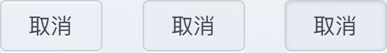
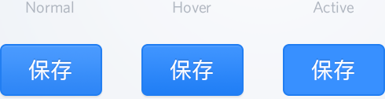

Mixins are essentially functions that return a block of CSS that can be used wherever you want to include it. The "hello world" of mixins is browser prefixing border-radius (which is pointless) like so:
@mixin border-radius($radius) {
-ms-border-radius: $radius;
border-radius: $radius;
}
* { include border-radius(100%); }
Mixins are defined using the @mixin keyword followed by an
identifier and optionally some parameters. An example of a common mixin:
@mixin clearfix {
&:after {
display: table;
clear: both;
content: '';
}
}
.container { @include clearfix; }
Which compiles to
.container:after {
display: table;
clear: both;
content: '';
}
In reality mixins are far more powerful and can be used to compose entire components.
I will be building a button component based on this Dribbble shot by Jamie Fang. Let's examine the states of the default button:
For a simple component these buttons have a lot going on. The normal state has a regular and inset box shadow, text shadow, and linear gradient background. Creating a class for this button is simple:
.btn {
display: inline-block;
padding: 1.125em 2.3125em;
border-radius: 8px;
border: 2px solid #ccd1d9;
background-color: #ecf0f5;
color: #3d444f;
box-shadow: 0 2px 0 #fbfcfd,
inset 0 2px 0 #fbfcfd;
text-shadow: 0 1px 1px #fbfcfd;
outline: none;
&:hover, &:focus { box-shadow: 0 2px 0 #fff; }
&:active {
box-shadow: 0 2px 0 #fbfcfd,
inset 0 2px 10px #ccd1d9;
}
}This works. But if we want to guide a user in the right direction we're going to need some action indicators for these buttons. Have a look at the primary button states:
The main differences between the default and primary buttons are:
We can easily create a modifier class that overwrites those properties:
.btn {
// ...
&--primary {
border-color: #217ef2;
background-color: #3b90fa;
background: linear-gradient(to bottom, #58a2fe, #2e87f7);
color: #fff;
box-shadow: 0 2px 4px #dee0e5, inset 0 2px 0 #58a2fe;
text-shadow: 0 -1px 1px #3080e2;
// &:hover, &:focus { etc... }
}
}We have a button component with a default and primary state. Our designer wants us to add two more states: success, and danger. However, we're currently hovering near 50 lines of code for a button with two states and we don't know how many more will be added in the future. This is a great time to refactor our current solution.
Looking at the primary state is a good start. We can determine all the values that get overwritten and create a mixin to handle that for us.
Mixins can accept keyword arguments, my advice is to always use
them if your mixin accepts more than one argument. It only adds
readability to a large codebase. Without keyword arguments you would
come accross something like this in the source:
buildButtonState(dashed, white, 5em, green, ...)
This is a pain to reason about and only leads to confusion.
Always use keyword arguments for non-trivial mixins.
@mixin buildButtonState(
$borderColor: firebrick,
$gradientStart: navajowhite,
$gradientEnd: seagreen,
$color: ivory,
$boxShadow: #dee1e5,
$insetBoxShadow: salmon,
$textShadow: rebeccapurple
) {
border-color: $borderColor;
background-color: $gradientEnd;
background: linear-gradient(to bottom, $gradientStart, $gradientEnd);
color: $color;
box-shadow: 0 2px 4px $boxShadow, inset 0 2px 0 $insetBoxShadow;
text-shadow: 0 -1px 1px $textShadow;
&:hover, &:focus {
background-color: darken($gradientEnd, 4%);
background: linear-gradient(to bottom,
darken($gradientStart, 4%),
darken($gradientEnd, 4%)
);
box-shadow: 0 2px 4px $boxShadow,
inset 0 2px 0 mix($insetBoxShadow, $gradientStart, 2%);
}
&:active {
background: mix($gradientEnd, $gradientStart);
box-shadow: inset 0 2px 10px $borderColor;
}
}Now replace the &--primary class to use the new
mixin.
.btn {
// ...
&--primary {
@include buildButtonState;
}
}
.btn {
// ...
&--primary {
@include buildButtonState(
$borderColor: #217ef2,
$gradientStart: #58a2fe,
$gradientEnd: #2e87f7,
$insetBoxShadow: #58a2fe,
$textShadow: #3080e2
);
}
&--success {
@include buildButtonState(
$borderColor: #279a5b,
$gradientStart: #30cb76,
$gradientEnd: #2da965,
$insetBoxShadow: #40d081,
$textShadow: #2bb065
);
}
&--danger {
@include buildButtonState(
$borderColor: #e1342b,
$gradientStart: #f25850,
$gradientEnd: #e54138,
$insetBoxShadow: #f3665f,
$textShadow: #d64b42
);
}
&--small {
padding: .5625em 1.5625em;
}
}
Creating components this way allows for easier extension, predictable results, and a more managable codebase. If we were to not use mixins in this example the resulting file would be over 200 lines of code and a mess to look at and change. If we wanted to add another button style it would be trivial to do so. Mixins are really powerful and incredibly helpful to remove duplication in your codebase.
The best way to learn is by doing. Search Dribbble for a user interface that you like and try to create it using HTML & Sass. Refactor your code to make use of mixins and post the result here.
The source code for this blog post is available at Github. Please leave a comment if you have any questions or to show off what you've made with mixins!